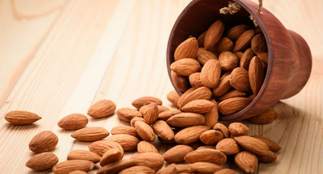

<body>
 <!--<div>
    </img>
  </div> --> 
  <p>
    GRAIN is a small international non-profit organisation that works to support small farmers and social movements in their struggles for community-controlled and biodiversity-based food systems. Our support takes the form of independent research and analysis, networking at local, regional and international levels, and fostering new forms of cooperation and alliance-building. Most of our work is oriented towards, and carried out in, Africa, Asia and Latin America.

GRAIN's work goes back to the early 1980s, when a number of activists around the world started drawing attention to the dramatic loss of genetic diversity on our farms — the very cornerstone of the world's food supply.

We began doing research, advocacy and lobbying work under the auspices of a coalition of mostly European development organisations. That work soon expanded into a larger programme and network that needed its own footing. In 1990 GRAIN was legally established as an independent non-profit foundation with its headquarters in Barcelona, Spain.

By the mid-1990s, GRAIN reached an important turning point. We realised that we needed to connect more with the real alternatives that were being developed on the ground, in the South. Around the world, and at local level, many groups had begun rescuing local seeds and traditional knowledge and building and defending sustainable biodiversity-based food systems under the control of local communities, while turning their backs on the laboratory developed 'solutions' that had only got farmers into deeper trouble. In a radical organisational shift, GRAIN embarked on a decentralisation process that brought us into closer contact with realities on the ground in the South, and into direct collaboration with partners working at that level. At the same time, we brought a number of those partners into our governing body and started regionalising our staff pool.

By the turn of the century, GRAIN had transformed itself from a mostly Europe-based information and lobbying group into a dynamic and truly international collective — functioning as a coherent organisation — that was linking and connecting with local realities in the South as well as developments at the global level. In that process, GRAIN's agenda shifted away from lobbying and advocacy much more towards directly supporting and collaborating with social movements, while retaining our key strength in independent research and analysis.

GRAIN is an organisation that represents no one but itself. However, it is through collaboration and partnerships that we link in with local and national realities and play a meaningful role in our information, research, advocacy and networking activities, be it in the regions or at international level. In fact, we work with many groups in different parts of the world to produce and disseminate collaborative publications and analyses, and engage in other collaborative projects.

During the first part of 2018 GRAIN underwent two external evaluations. You can download the summary of the evaluation of GRAIN’s work on land grabbing and seeds, and the one of our work in corporations, trade and climate (both in English). Please read our activity reports for more information.


For over 20 years, between 1990 and 2011, GRAIN published the quarterly magazine Seedling. In that period it was one of GRAIN main outlets of our research and writing, but also contains many articles from partners and others. All issues of Seedling can be accessed here, and it’s articles can also be searched in the advanced search feature of our site.  
  </p>
<!-- </body> -->